Quick Start Guide for Windows
Purpose
This document provides instructions on how to install EvoStream Media Server (EMS) on Windows® operating systems.
The document also provide instructions for some basic features of the EMS such as starting EMS, pulling, playing source streams and shutting down EMS.
Getting EvoStream Media Server
-
Download the EMS package installer at https://evostream.com/software-downloads
-
Install EMS
2.1. Extract the zip package
2.2. Right-click on
setup.exethen click Run as administrator
2.3. Select the Setup Language, click OK
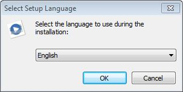
2.4. Click Next to continue the installation
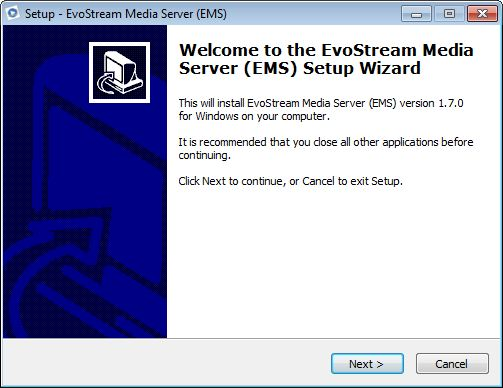
2.5. Read the license agreement and select I accept the agreement, click Next
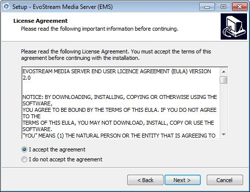
2.6. Verify the installation path, click Next
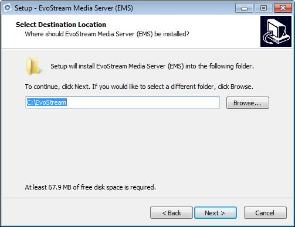
2.7. Tick Create a desktop icon, click Next
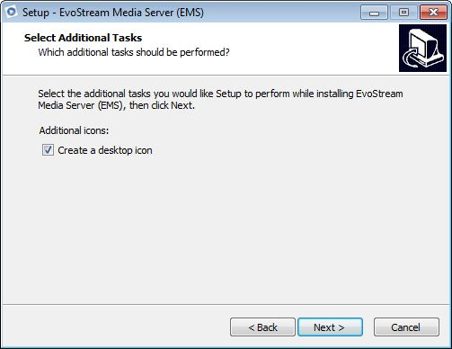
2.8. Confirm installation, click Install
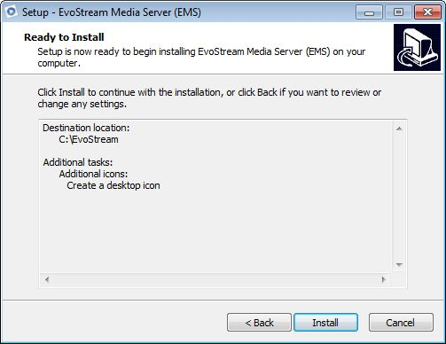
2.9. Read the information, click Next
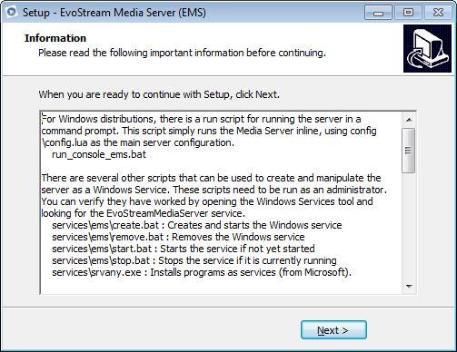
2.10. Click Finish to finish the installation.
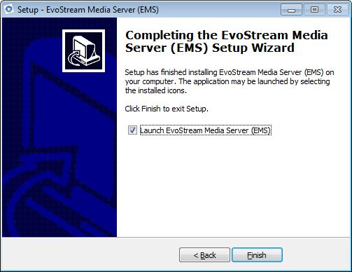
Note: Uncheck Launch EMS if the license is not yet installed.
License Installation
Note: You should already have your license file available. If none, EvoStream offers a 30-day free trial license to those who want to explore the features of EMS. Click here to avail the free trial or contact salesupport@evostream for other license type purchase.
There are two options for installing the license file: manual or via Web UI.
A. Manual
Copy the License.lic file to ..\EvoStream\config.
B. Via Web UI
1. Run the EMS (direct launch after installation) or using the desktop shortcut.
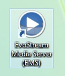
2. Open the EMS Web UI by pointing your browser to
http://localhost:8888/EMS_web_ui/index.html
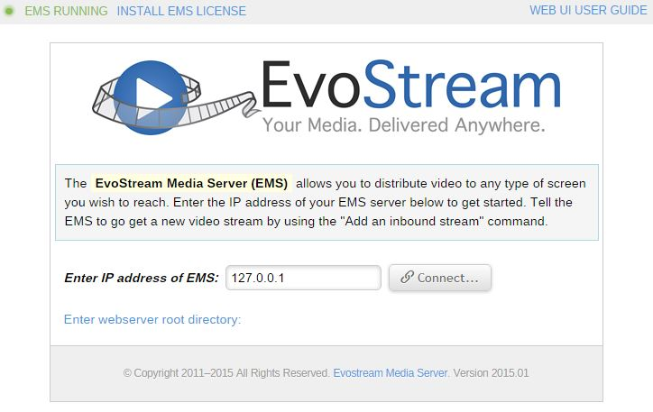
3. Click INSTALL EMS LICENSE
4. Locate the license file, and enter the directory where license will be installed
5. Click Install License
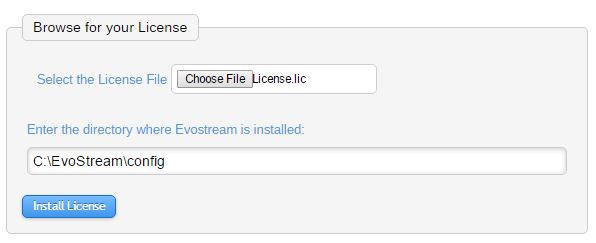
6. A message for successful installation will be displayed
7. Restart the EMS
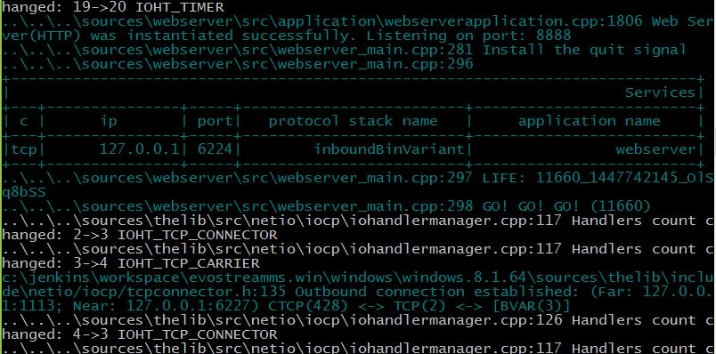
Tip: A successful EMS start will show GO! GO! GO! in console.
Connecting to Telnet
To use EMS, a telnet is needed for communication. User needs to enable the telnet client to be able to run the EMS API commands.
1. Open a command prompt, and run telnet
-
For ASCII telnet interface
$ telnet localhost 1112 -
For ASCII CLI interface
$ telnet localhost 1222
A telnet localhost will be opened after pressing Enter key.
2. For preliminary check, type:
version
The result for ASCII CLI is shown below:
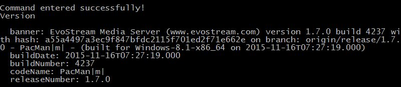
Basic EMS API
A. Adding a Stream
The pullStream command is the simplest command to get an external stream.
Sample command:
pullstream uri=rtmp://s2pchzxmtymn2k.cloudfront.net/cfx/st/mp4:sintel.mp4 localstreamname=test
B. Stream Playback
Pulled streams are automatically saved in EMS. To play the pulled stream, use a media player that supports the media format that was pulled.
EMS automatically converts the stream pulled in different protocols so no worries if you want to play the stream using an RTMP or RTSP protocol for example.
To play in media player:
1. Go to Open Network Stream
2. Enter the URL of the pulled stream
rtsp://127.0.0.1:5544/test
rtmp://127.0.0.1/live/test
The EMS will fetch the pulled stream via localStreamName and playback will start once the file is found.
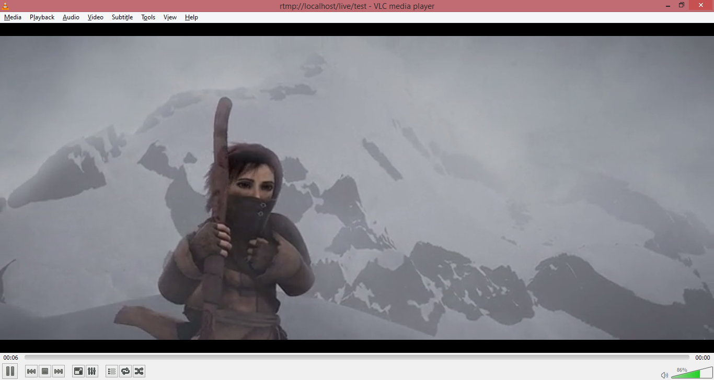
Please refer to EMS_User’s_Guide and EMS_API_Definitions for more information.
C. Stopping the EMS server
If the user wants to shut down the EMS, just send the command:
shutdownServer
The EMS will respond with a key:

Then send another shutdownserver command using the key:
shutdownServer key=bVjvUo8HQ6VzDFJv
The EMS will shut down after sending the command.